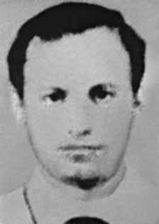

Francisco
José
de Oliveira
CIRCUNSTÂNCIAS DA MORTE
Francisco José de Oliveira foi morto no dia 5 de novembro de 1971, após ser baleado em uma operação dos órgãos da repressão. Maria Augusta Thomaz, que estava com Francisco na ocasião, conseguiu fugir, tendo relatado, à época, que viu o companheiro ser atingido por disparos dos policiais.
Maria Augusta desapareceu no ano de 1973, em Goiás. De acordo com a falsa versão apresentada pelos órgãos da repressão, no dia 5 de novembro de 1971, por volta das 14h, Francisco teria sido cercado na rua Turiassu, zona oeste da cidade de São Paulo, por uma equipe de agentes a serviço do DOI-CODI do II Exército, comandada pelo delegado Antônio Vilela, quando foi “morto em tiroteio” ao “reagir a tiros”.
Contudo, a partir das investigações empreendidas, tal versão restou desconstruída. Segundo o relatório elaborado pela Comissão Interamericana de Direitos Humanos (CIDH), Francisco foi ferido durante o cerco policial, mas tentou fugir, quando foi ferido inúmeras vezes à queima-roupa, além de espancado pelos agentes, diante de inúmeros populares. Foi, então, jogado dentro do porta-malas de um carro, ficando com uma de suas pernas estirada para fora. Os agentes bateram violentamente a porta sobre as pernas de Francisco, fraturando-as.
Posteriormente, Francisco foi levado para a rua Tutóia, nº 921, sede do DOI-CODI/II, onde morreu sob torturas. A requisição de exame necroscópico, datada de 5 de novembro, foi feita sob o nome de Dario Marcondes, o nome assumido por Francisco durante a clandestinidade. A ficha do necrotério consta que o corpo de Francisco foi recebido no dia 4 do mesmo mês, pelo médico legista Luiz Alves Ferreira; e sepultado no dia 6, no cemitério Dom Bosco. No exame necroscópico, realizado no dia 5 de novembro pelos médicos-legistas Mário Nelson Matte e José Henrique da Fonseca, constam mais de dez entradas de projéteis de arma de fogo em seu corpo, sendo a morte ocasionada por “choque traumático com hemorragia interna”.
As investigações, realizadas pela Comissão Especial sobre Mortos e Desaparecidos Políticos – CEMDP, demonstram a contradição flagrante entre o laudo de exame necroscópico, que não descreve edemas e escoriações no rosto de Francisco, e a foto do IML, onde é possível ver claramente tais sinais. Apesar do atestado de óbito e do exame necroscópico registrarem o nome de Francisco como “Dario Marcondes”, há dois documentos do Serviço de Informações do Departamento de Ordem Política e Social (DOPS) que indicam o conhecimento das autoridades sobre a sua verdadeira identidade, informando ainda a sua morte.
Apesar da identificação dos órgãos da repressão, ora com nome falso ou verdadeiro, as fotos de seu cadáver são encaminhadas com identidade “desconhecida”. O corpo de Francisco José de Oliveira foi encaminhado para o Cemitério de Dom Bosco, construído pela Prefeitura de São Paulo, em 1971, tendo sido enterrado como indigente, durante a gestão da prefeitura municipal por Paulo Maluf. Em 1976, os cadáveres de pessoas não identificadas, indigentes e vítimas da repressão política, foram transferidos para uma vala clandestina, conhecida como vala de Perus. Em 1990, a vala foi descoberta e foram encontradas 1.049 ossadas.
De acordo com os registros do cemitério, os restos mortais de Francisco estariam nessa vala, mas suas ossadas ainda estão pendentes de identificação. Considerando a data do documento com que Francisco José de Oliveira deu entrada no necrotério (anterior a sua prisão e morte no DOI-CODI); o uso do nome falso e fotografado como desconhecido, apesar de plenamente identificado pelos órgãos de segurança; o corpo ter sido enterrado como indigente no Cemitério Dom Bosco, no bairro de Perus, em São Paulo (SP); o laudo necroscópico não descrever lesões claramente produzidas por tortura e evidentes em fotografias, a CEMDP concluiu que a falsa versão, apresentada à época dos fatos, foi uma tentativa de ocultar a prisão, tortura e morte de Francisco.
Diante da morte e ausência de identificação plena de seus restos mortais, a Comissão Nacional da Verdade, ao conferir tratamento jurídico mais adequado ao caso, entende que Francisco José de Oliveira permanece desaparecido.
Francisco José de Oliveira was killed on November 5, 1971, after being shot in an operation by repression agencies. Maria Augusta Thomaz, who was with Francisco at the time, managed to escape, having reported, at the time, that she saw her companion being shot by police officers.
Maria Augusta disappeared in 1973, in Goiás. According to the false version presented by the repression bodies, on November 5, 1971, at around 2 pm, Francisco was surrounded on Turiassu Street, in the west zone of the city of São Paulo, by a team of agents serving the DOI-CODI of the II Army, commanded by delegate Antônio Vilela, when he was “killed in a shootout” after “reacting to gunfire”.
However, based on the investigations undertaken, this version remained deconstructed. According to the report prepared by the Inter-American Commission on Human Rights (IACHR), Francisco was injured during the police siege, but tried to escape, when he was injured numerous times at close range, in addition to being beaten by the agents, in front of numerous people. He was then thrown into the trunk of a car, with one of his legs sticking out. The agents violently slammed the door on Francisco's legs, fracturing them.
Subsequently, Francisco was taken to Rua Tutóia, nº 921, headquarters of DOI-CODI/II, where he died under torture. The request for a necroscopic examination, dated November 5, was made under the name of Dario Marcondes, the name assumed by Francisco while in hiding. The morgue record states that Francisco's body was received on the 4th of the same month, by the coroner Luiz Alves Ferreira; and buried on the 6th, in the Dom Bosco cemetery. In the necroscopic examination, carried out on November 5th by coroners Mário Nelson Matte and José Henrique da Fonseca, more than ten firearm projectiles were found in his body, with death being caused by “traumatic shock with internal bleeding”.
The investigations, carried out by the Special Commission on Political Deaths and Disappearances – CEMDP, demonstrate the blatant contradiction between the necroscopic examination report, which does not describe edemas and abrasions on Francisco's face, and the IML photo, where it is possible to clearly see such signs. Although the death certificate and the necroscopic examination record Francisco's name as “Dario Marcondes”, there are two documents from the Information Service of the Department of Political and Social Order (DOPS) that indicate the authorities' knowledge of his true identity, also reporting his death.
Despite the identification of the repressive bodies, sometimes with a false or real name, the photos of his corpse are forwarded with an “unknown” identity. The body of Francisco José de Oliveira was sent to the Dom Bosco Cemetery, built by the City of São Paulo, in 1971, having been buried as a pauper, during the management of the city hall by Paulo Maluf. In 1976, the bodies of unidentified people, indigents and victims of political repression, were transferred to a clandestine grave, known as the Perus grave. In 1990, the grave was discovered and 1,049 bones were found.
According to cemetery records, Francisco's remains would be in this grave, but his bones are still pending identification. Considering the date of the document with which Francisco José de Oliveira was admitted to the morgue (prior to his arrest and death at DOI-CODI); the use of a false name and photographed as an unknown person, despite being fully identified by security agencies; the body was buried as a pauper in the Dom Bosco Cemetery, in the Perus neighborhood, in São Paulo (SP); the necroscopic report did not describe injuries clearly produced by torture and evident in photographs, CEMDP concluded that the false version, presented at the time of the events, was an attempt to hide Francisco's arrest, torture and death.
Given his death and the lack of full identification of his remains, the National Truth Commission, by granting more appropriate legal treatment to the case, understands that Francisco José de Oliveira remains missing.
Francisco José de Oliveira fue asesinado el 5 de noviembre de 1971, tras ser fusilado en un operativo de los organismos de represión. María Augusta Thomaz, que se encontraba con Francisco en ese momento, logró escapar, habiendo informado, en ese momento, que vio a su compañero siendo baleado por agentes policiales.
María Augusta desapareció en 1973, en Goiás. Según la versión falsa presentada por los órganos de represión, el 5 de noviembre de 1971, alrededor de las 14 horas, Francisco fue rodeado en la calle Turiassu, en la zona oeste de la ciudad de São Paulo, por un equipo de agentes al servicio del DOI-CODI del II Ejército, comandados por el delegado Antônio Vilela, cuando fue “muerto en un tiroteo” luego de “reaccionar a disparos”.
Sin embargo, según las investigaciones realizadas, esta versión quedó deconstruida. Según el informe elaborado por la Comisión Interamericana de Derechos Humanos (CIDH), Francisco resultó herido durante el asedio policial, pero intentó escapar, cuando fue herido en numerosas ocasiones a quemarropa, además de ser golpeado por los agentes, frente a numerosas personas. Luego lo arrojaron al maletero de un coche, con una pierna asomando. Los agentes golpearon violentamente con la puerta las piernas de Francisco, fracturándolas.
Posteriormente, Francisco fue trasladado a la Rua Tutóia, nº 921, sede del DOI-CODI/II, donde murió bajo tortura. La solicitud de examen necroscópico, fechada el 5 de noviembre, se realizó bajo el nombre de Darío Marcondes, nombre que asumió Francisco mientras se encontraba escondido. El acta de la morgue refiere que el cuerpo de Francisco fue recibido el día 4 del mismo mes, por el médico forense Luiz Alves Ferreira; y enterrado el día 6, en el cementerio Dom Bosco. En el examen necroscópico, realizado el 5 de noviembre por los forenses Mário Nelson Matte y José Henrique da Fonseca, se encontraron en su cuerpo más de diez proyectiles de arma de fuego, siendo la muerte causada por “shock traumático con hemorragia interna”.
Las investigaciones, realizadas por la Comisión Especial sobre Muertes y Desapariciones Políticas – CEMDP, demuestran la flagrante contradicción entre el informe del examen necroscópico, que no describe edemas y abrasiones en el rostro de Francisco, y la foto del IML, donde es posible ver claramente tales signos. Si bien el certificado de defunción y el examen necroscópico registran el nombre de Francisco como “Darío Marcondes”, existen dos documentos del Servicio de Información del Departamento de Orden Político y Social (DOPS) que indican el conocimiento de las autoridades sobre su verdadera identidad, reportando también su muerte.
Pese a la identificación de los cuerpos represivos, en ocasiones con nombre falso o real, las fotos de su cadáver son reenviadas con una identidad “desconocida”. El cuerpo de Francisco José de Oliveira fue enviado al Cementerio Dom Bosco, construido por el Ayuntamiento de São Paulo, en 1971, habiendo sido enterrado como indigente, durante la gestión municipal de Paulo Maluf. En 1976, los cuerpos de personas no identificadas, indigentes y víctimas de la represión política, fueron trasladados a una fosa clandestina, conocida como fosa del Perú. En 1990 se descubrió la tumba y se encontraron 1.049 huesos.
Según los registros del cementerio, los restos de Francisco estarían en esta tumba, pero sus huesos aún están pendientes de identificación. Considerando la fecha del documento con el que Francisco José de Oliveira ingresó a la morgue (previo a su detención y muerte en el DOI-CODI); el uso de un nombre falso y fotografiado como un desconocido, a pesar de estar plenamente identificado por los organismos de seguridad; el cuerpo fue enterrado como indigente en el cementerio Dom Bosco, en el barrio de Perus, en São Paulo (SP); Como el informe necroscópico no describía lesiones claramente producidas por tortura y evidentes en fotografías, el CEMDP concluyó que la versión falsa, presentada al momento de los hechos, fue un intento de ocultar la detención, tortura y muerte de Francisco.
Ante su muerte y la falta de identificación plena de sus restos, la Comisión Nacional de la Verdad, al otorgar un tratamiento jurídico más adecuado al caso, entiende que Francisco José de Oliveira continúa desaparecido.